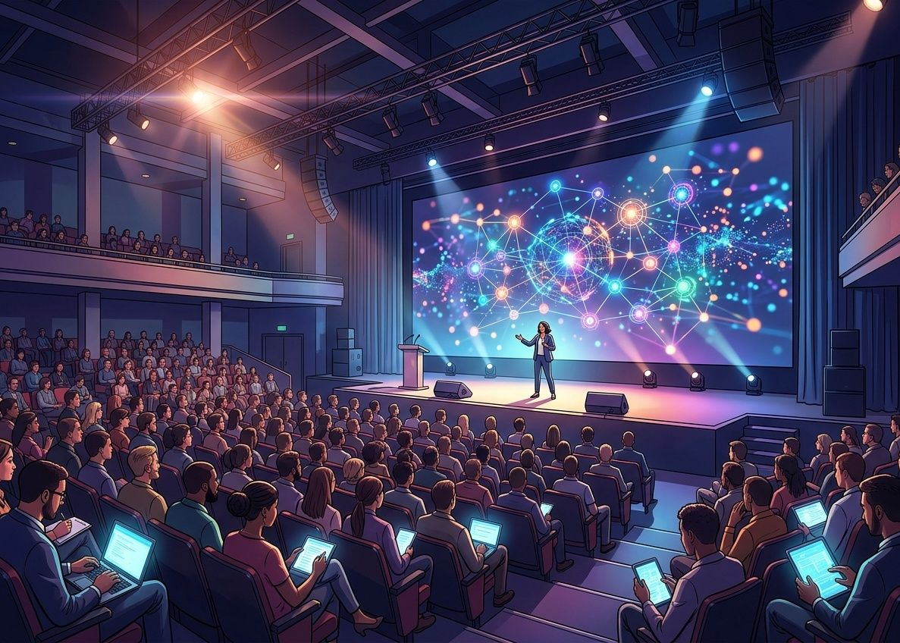

El ecosistema Open Source
Todo lo que hay que saber para entender de dónde viene el software libre y quién lo mueve. Cada parte tiene su propia página: elige por dónde empezar.
¿Qué es Open Source?
Qué significa código abierto, cómo funcionan las licencias y por qué casi todo el software que usas tiene raíces abiertas.
- Código abierto
- GPL · MIT · Apache
- Un día con open source

Historia
Del Proyecto GNU y el nacimiento de Linux hasta el ecosistema actual.
- GNU 1983
- Linux 1991
- Precursores

Organizaciones
Fundaciones, empresas y comunidades que financian y protegen los grandes proyectos.
- Fundaciones
- Empresas
- Comunidades
- 1983Proyecto GNURichard Stallman anuncia un sistema operativo 100 % libre.
- 1991LinuxLinus Torvalds publica el núcleo que completa el rompecabezas.
- 1998"Open Source"Nace el término y la Open Source Initiative.
- 2001WikipediaLa enciclopedia libre, hecha con software libre.
- 2005GitTorvalds crea la herramienta que hoy usa casi todo programador.
Android, el sistema de la mayoría de los celulares del mundo, está construido sobre el núcleo Linux.
Las 500 supercomputadoras más potentes del mundo funcionan con Linux.
GNU es un acrónimo recursivo: significa "GNU's Not Unix" (GNU no es Unix).
Git, la herramienta para guardar versiones de código, la creó en 2005 el mismo autor de Linux: Linus Torvalds.
Python y Linux nacieron el mismo año: 1991.
Firefox viene del código del navegador Netscape, que se liberó en 1998.
Blender era un programa comercial; en 2002 la comunidad juntó donaciones para comprarlo y liberarlo.
Wikipedia funciona con MediaWiki, un programa de software libre que cualquiera puede instalar.